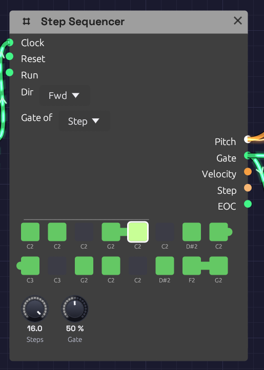

Step Sequencer
Module ID seq.step · Category Utility

Green steps play, dark steps rest; the outlined step is the one sounding now.The Step Sequencer plays a repeating pattern of up to 16 notes. Each clock pulse moves it one step along, and each step sends out its own pitch, a gate if the step is switched on, and a velocity. Patch Pitch into an oscillator and Gate into an envelope, and a Clock turns it into a bass line, an arpeggio or a riff.
The pattern lives on the node itself: a grid of step buttons with each step's note name underneath.
Inputs
| Port | Signal Type | Description |
|---|---|---|
| Clock | Gate (Green) | Each rising edge advances one step |
| Reset | Gate (Green) | A rising edge jumps back to step 1 |
| Run | Gate (Green) | Steps advance only while this is high. With nothing patched, the sequencer runs |
Outputs
| Port | Signal Type | Description |
|---|---|---|
| Pitch | Control (Orange) | The current step's note as V/Oct. Middle C (C4) is 0.0, the same as the Keyboard and MIDI modules |
| Gate | Gate (Green) | A pulse on each clock when the current step is switched on |
| Velocity | Control (Orange) | The current step's velocity, 0 to 1 |
| Step | Control (Orange) | The current position as a ramp: 0 on the first step, 1 on the last |
| EOC | Gate (Green) | End of cycle: a 1 ms pulse each time the pattern comes round |
Parameters
| Control | Range | Default | Description |
|---|---|---|---|
| Steps | 1 – 16 | 8 | How many steps play before the pattern loops |
| Gate (Gate Length) | 1 – 99% | 50% | How long each gate stays high, as a percentage of 100 ms |
| Dir (Direction) | Fwd / Bwd / P-P / Rnd | Fwd | Playback order |
Each of the 16 steps also stores a note (default C4), a gate on/off (default on) and a velocity (default 100 of 127). Patches save all of them.
Programming a pattern
The grid shows one button per active step, in rows of eight. Steps beyond Steps are hidden, not lost: turn Steps back up and they return as you left them.
- Click a step to switch its gate on (green) or off (dark). An off step is a rest: Pitch still moves to its note, but no gate fires.
- Right-click a step to change its note: Pitch +12 (Octave Up), Pitch +1 (Semitone Up), Pitch -1 (Semitone Down) or Pitch -12 (Octave Down). The note name under the step updates as you go.
While the patch plays, the current step is drawn brighter, with a white outline.
Velocities can't be edited on the node yet. Every step plays at 100 unless the patch file says otherwise. If you do set them there, patch Velocity into an envelope's Velocity input for accents.
Timing
Clock and gate length
The sequencer has no tempo of its own. It moves on each rising edge at Clock, so the clock you patch in sets the speed, and its swing or irregularity carries through.
Gate sets the length of each note as a share of a fixed 100 ms, not of the step. At 50% each gate lasts 50 ms; at 99%, 99 ms. Fast patterns (sixteenths at 120 BPM are 125 ms apart) stay detached at every setting, which suits plucks and basses. For longer notes, give the envelope a longer Decay and higher Sustain, or a longer Release.
Reset and the first step
The pattern advances before it plays, so each clock moves to the next step and then sounds it. After a Reset, the sequencer sits on step 1 and the next clock plays step 2. If you want step 1 on the downbeat, send the reset just after the last step of the bar instead of on the downbeat, or treat step 2 as the start of the phrase.
Directions
| Dir | Order (with 4 steps) | EOC |
|---|---|---|
| Fwd | 1 2 3 4 1 2 3 4 … | After step 4 |
| Bwd | 4 3 2 1 4 3 2 1 … | After step 1 |
| P-P (ping-pong) | 1 2 3 4 3 2 1 2 … | At each end |
| Rnd | A random step on each clock | Never |
Ping-pong doesn't repeat the end steps, so a four-step pattern bounces over six clocks.
Patches
A sequenced voice
[Clock Gate] ──> [Step Sequencer Clock]
[Step Sequencer Pitch] ──> [Oscillator V/Oct]
[Step Sequencer Gate] ──> [ADSR Gate]
[Oscillator Out] ──> [SVF Filter In]
[SVF Filter LowPass] ──> [VCA In]
[ADSR Out] ──> [VCA CV]
[VCA Out] ──> [Audio Output Mono]
Set the Clock's Div to 1/8 or 1/16, switch a few steps off to make rests, and use the Oscillator's Oct knob to move the whole pattern up or down.
Modulation sequences
Pitch is a control signal like any other. Patch it into a filter's Cutoff and each step sets a brightness instead of a note: one octave of cutoff for each octave of pitch. Combine with a second sequencer for melody, both clocked together.
Patterns of different lengths
Two sequencers on the same clock with different Steps settings drift against each other and line up again only every few bars. Eight steps against five repeats every 40 clocks.
[Clock Gate] ──> [Step Sequencer A Clock] (Steps 8)
[Clock Gate] ──> [Step Sequencer B Clock] (Steps 5)
Stop and start
Patch a gate into Run to pause the pattern in place. While Run is low, clocks are ignored and the sequencer stays on its current step.
Related modules
- Clock: drives the sequencer
- ADSR Envelope: shapes each step's note from the Gate output
- Oscillator: plays the Pitch output
- Sample & Hold: stepped values that aren't programmed by hand